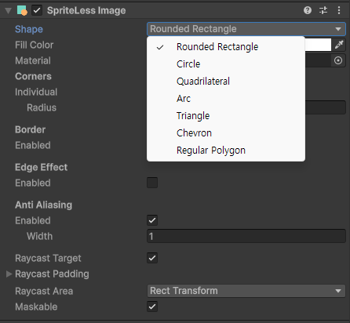
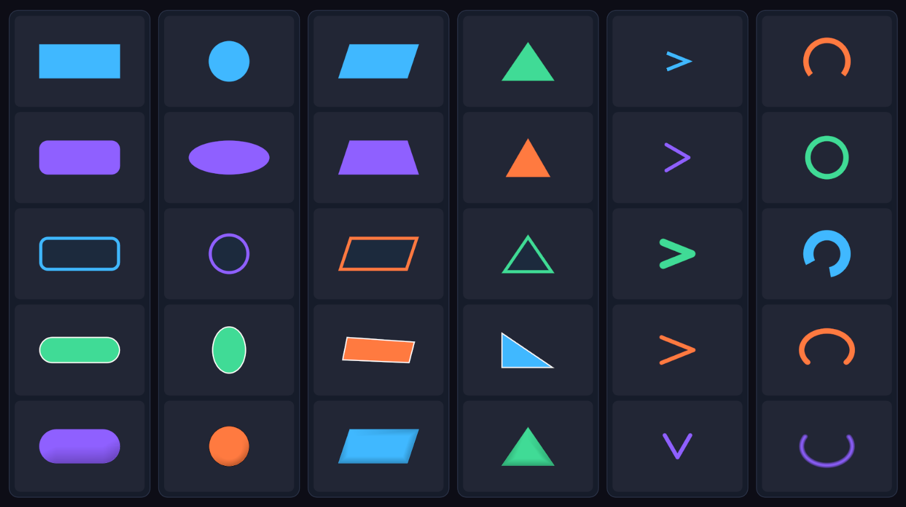

User guide
SpriteLess UI
Create everyday uGUI shapes without sprite files. Choose a shape in one component, then adjust it with the Inspector and RectTransform.
Free & open source · MITInstallation
In Unity's Package Manager, choose Add package from git URL and paste:
https://github.com/DarknessTyranno/SpriteLess-UI.git?path=/Packages/io.github.darknesstyranno.spriteless-uiYou need Unity 2021.3 LTS or newer, Unity UI 1.0.0 or the version bundled with your Editor, and Git 2.14 or newer for Git URL installation.
If SpriteLess UI is already installed as the Core package for Pro, you do not need a second copy.
SpriteLessImage
- Create a shape from GameObject → UI (Canvas) → SpriteLess, or add SpriteLessImage to a UI GameObject.
- Choose Shape and set Fill Color.
- Adjust its RectTransform to position, resize or rotate the shape.
- Use the settings shown for that shape to change corners, thickness or other details.
{kind=link}

You do not need to swap components to change shapes. The Inspector displays the controls that apply to the selected shape.

Choose a shape
- Rounded Rectangle
- Use Radius for rounded corners. Set it to 0 for a rectangle, or increase it for a pill. Enable Individual to give each corner a different radius.
- Circle
- Use a square RectTransform for a circle. Change its width and height independently for an ellipse.
- Quadrilateral
- Adjust each corner's X/Y values in Corner Offsets to make a trapezoid or parallelogram. Keep the outline convex and avoid crossing the edges.
- Triangle
- Choose Type: Isosceles fills the rectangle, Equilateral keeps equal sides, and Right uses Right Angle Corner. Use Direction where available.
- Chevron
- Choose Stretch or Equilateral proportions. Adjust Direction, Thickness, Spread, Cap and Join. Equilateral keeps the proportions of two sides of an equilateral triangle.
- Arc / Ring
- Adjust Thickness, Start Angle and Sweep Angle. Start Angle 0 is at the top. Positive sweep moves clockwise; a sweep of 360 makes a ring. Use Cap for the ends of an open arc.
- Regular Polygon
- Choose 3–64 Sides, adjust clockwise Rotation, and use Radius to round the corners. The polygon keeps its proportions even in a non-square RectTransform.
Keep a polygon centered while rotating
Enable Center on Rect to keep the regular polygon's center at the RectTransform center. Its size stays constant as you rotate it, with some extra space around the edges. Leave it off to fit the polygon's bounds to the available rectangle.
Border and appearance
- Fill Color
- Set the shape's color and transparency.
- Border
- Enable it, then set Width and Color. The border is drawn inside the shape.
- Edge Effect
- Enable a directional edge tint for lightweight depth. Set Width, Color and Direction. A direction of (0, -1) shades the bottom edge.
- Anti Aliasing
- Enable it to soften the contour. Width controls the inset feather in UI units, not a fixed number of screen pixels. Start small and inspect it at the intended display size.
Arc and Chevron use stroke controls instead of the Border and Edge Effect settings.
Pointer input and UI controls
Leave Raycast Target on for a graphic that needs to receive pointer input. Turn it off for decoration that should not block controls behind it.
- Raycast Area: Rect Transform
- Use the full UI rectangle as the hit area, matching standard rectangular UI behavior.
- Raycast Area: Shape
- Make the hit area follow the generated shape. Useful for rings, arcs and other non-rectangular graphics.
- Maskable
- Keep this enabled when the graphic should be clipped by a parent Mask or RectMask2D.
Buttons, sliders and layouts
Assign SpriteLessImage to a Button's Target Graphic to use it as the button graphic. For a Slider, use it on the fill object and assign that object's RectTransform to Fill Rect. Size the fill with the Slider's RectTransform-based workflow.
Position and resize shapes with standard RectTransforms and layout groups. The component draws inside its assigned rectangle.
Materials
Leave Material empty to use the default UI material, or assign a uGUI-compatible material for a custom appearance. No custom shader or generated texture is required for the built-in shapes.
Test custom materials with any masks you use. A material that works on a 3D object is not necessarily suitable for uGUI. If you plan to bake it with Pro, check the Baker preview and output too.
Troubleshooting
My circle looks like an ellipse.
Set the RectTransform width and height to the same value for a circle.
The empty area around an arc still blocks clicks.
Use Raycast Area → Shape. If the whole graphic is decorative, turn off Raycast Target instead.
The polygon appears to shift when rotated.
Enable Center on Rect. This keeps the regular polygon's center and size fixed instead of refitting its bounds at each angle.
A custom material does not render correctly.
Clear the Material field to check the shape with the default UI material, then verify your custom material's uGUI and masking compatibility.
Support and license
SpriteLess UI is released under the MIT license on GitHub. For bug reports, open an issue with your Unity version, package version and steps to reproduce the problem.
You can also contact darknesstyranno@naver.com.
Back to top ↑